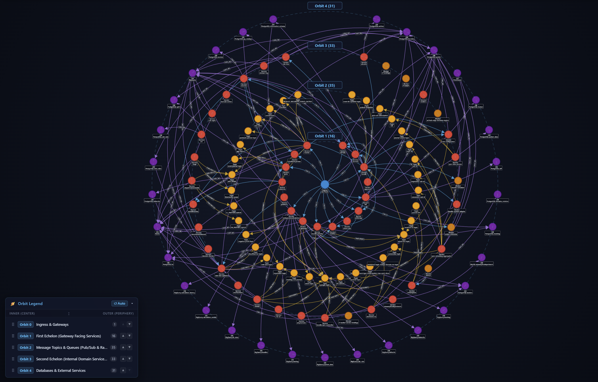

Maps monoliths, microservices, and asynchronous event streams into an interactive semantic graph. Queryable with native Cypher in VS Code and integrated with AI coding assistants via MCP.

CodeExplorer provides structural codebase comprehension without external infrastructure dependencies or cloud telemetry leakage.
No Neo4j, no Docker containers, and no memory-hogging background daemons. Compiles open Cypher AST queries directly to optimized SQL B-Tree index scans with sub-50ms execution.
SqliteGraphDatabase.csProject complex microservices across 5 concentric architectural tiers. Drag-and-drop orbit rings, tune bezier curve routing factors (-200 to +200), and inspect DDD bounded contexts.
Cytoscape.js + Webview
Filter out intermediate message topics (Kafka, RabbitMQ, SQS) and CodeExplorer automatically synthesizes clean dashed [SUBSCRIBES (via Topic)] links, preserving flow without clutter.
Smart Message SynthesisGive Cursor, Claude Desktop, and Copilot surgical codebase intelligence. AI agents query call-chains, blast-radius impacts, and architectural topology in 1 turn without token-wasteful grep loops.
stdio + SSE HTTP (/mcp)Pure in-memory visitor architecture for C#, Java, TypeScript, Go, Python, ColdFusion, and inline SQL. Extracts classes, methods, endpoints, callers, entities, and late-bound CQRS pipelines.
Tree-sitter + T-SQL ScriptDom
Enriches graph nodes with inferred business domains and architectural patterns via embedded llama.cpp with Vulkan GPU acceleration. Fast-applies cached intents in <50ms using SHA-256 fingerprints.
Zero-Leak Local SLMTest real architectural inquiries against the graph database. Fast, declarative, and structured.
// Find all downstream services impacted by OrderPlaced event MATCH (p:Service {name: 'OrderService'})-[r:EMITS]->(e:DomainEvent) MATCH (e)<-[:SUBSCRIBES]-(downstream:Service) OPTIONAL MATCH (downstream)-[:WRITES_TO]->(tbl:Table) RETURN p.name AS Producer, e.name AS EventName, downstream.name AS Consumer, tbl.name AS TargetTable ORDER BY Consumer
| Producer | EventName | Consumer | TargetTable |
|---|---|---|---|
| OrderService | OrderPlacedEvent |
BillingService | invoices |
| OrderService | OrderPlacedEvent |
InventoryService | stock_items |
| OrderService | OrderPlacedEvent |
NotificationHub | null |
| OrderService | OrderPlacedEvent |
ShippingGateway | shipments |
When AI coding assistants analyze large monorepos, brute-force file grepping fills context windows with irrelevant tokens and hallucinated connections. CodeExplorer provides surgical graph tools.
{
"mcpServers": {
"code-explorer": {
"command": "ce",
"args": ["mcp"],
"env": {
"CE_WORKSPACE": "."
}
}
}
}
Every entity in your codebase is represented across five decoupled layers, connecting physical files to business domain concepts.
Single self-contained binaries for macOS, Linux, and Windows. No SDK required.
ce binary directly into your PATH with automatic shell completions.ce.exe and registers in Windows User PATH.~/.local/bin..codeexplorer workspace configuration in current repository.